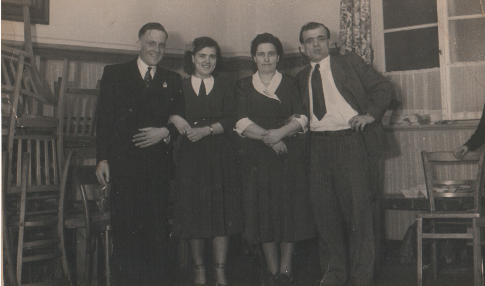
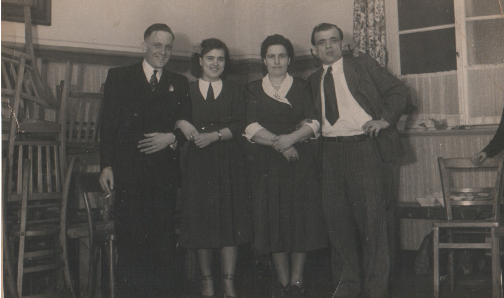

Mum was born in Münchengladbach in July 1925, and the family lived around Walsum, Dienslaken, Botrop, and Wuppertal. (All small places between Cologne (or Köln) and Duisberg.) She was Christened Liselotte Wilhelmina Kosrien. Her dad (known to me as ``Opa Fritz") was a miner. Her Mum, Christine had some more well healed relatives who owned land, and this meant the family were better off than many in the depression years. Opa was unemployed for six years, but the occasional bit of seasonal farm labouring (and some donations of milk) meant extra food. Also, Opa (who was well known as a fist fighter) was ``minder" for speakers at some local communist rallies. Even so, Mum and her siblings all had rickets. Mum had a bad time with diphtheria. Below is a picture of Mum as toddler, with her dad (who she idolised). At this age, Mum always wanted a lolly from the sweet shop, and Lolly became her family nickname.
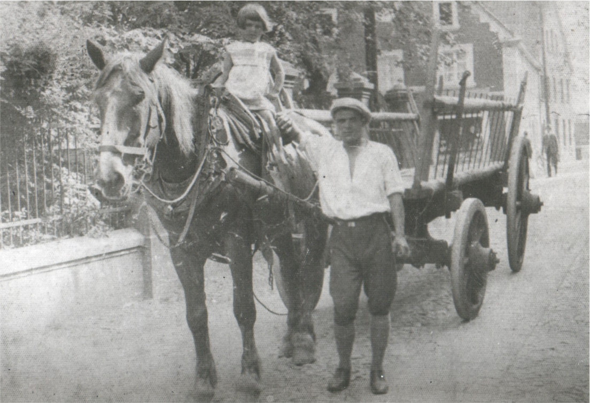
Mum had an elder brother Heinz, and two younger sisters. Hannalora (Lora) and Irmgart (Irmi). The times were ``interesting" as they say. There was strong support for the communist party in the area, there was the depression, and of course the rise of the Nazis. Opa's Jewish friends at the mine all just ``disappeared" and no-one could find out where they were. Mum left school at 14, and started working as a typist at a local chemical works. She remembers something about heavy water, but that meant nothing to her. Heinz lied about his age and ran off to join the German Navy. Because he was quite small, he was soon a rating in a U-Boat. He was a hansom wee devil at the time, as you can see below. (Opa was furious). Miraculously, Heinz survived the U-Boats. A fairly distant family member joined the Nazi party. This saved Opa's life when he was arrested by the SS.
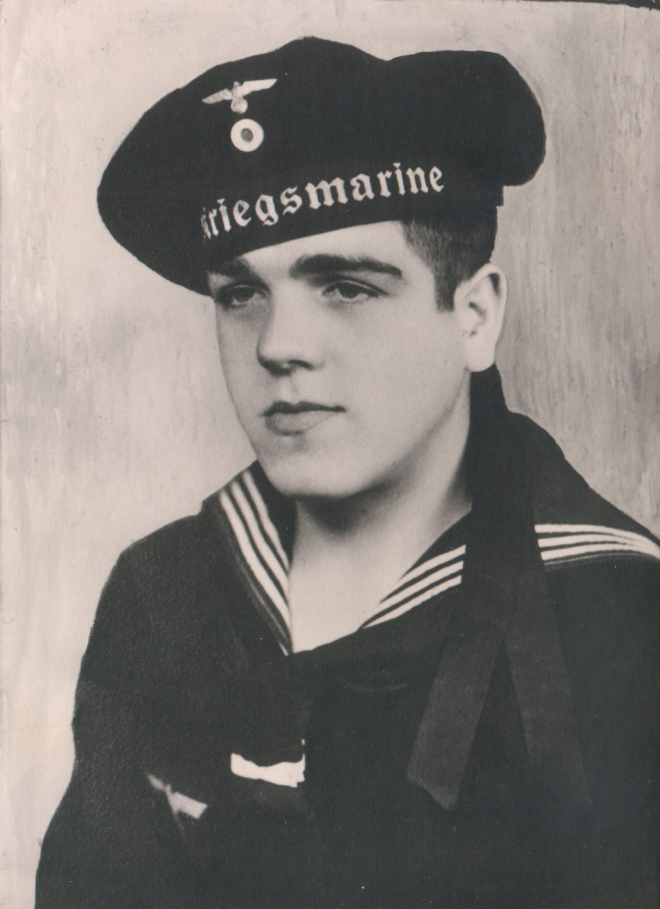 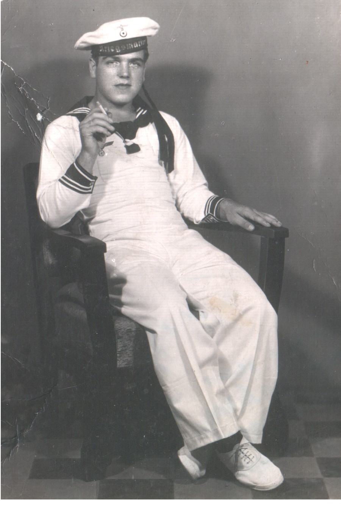
In 1945, the terrifying RAF raids stopped, then Opa noted that the sound of distant artillery meant it would all soon be over. They prayed that the British army would take over in their area. Then the sound of artillery was replaced with small arms fire. The bullet holes seen all over many of the surviving older buildings in the area pay testament to the bitterness of the fighting. Opa's prayers were answered, as they found themselves in the British sector. However Opa vanished again, this time as a suspected Nazi resistance fighter (he was a ``snappy dresser" - and quite unaware that his garters and britches would make him a suspect). At the camp, it was soon realised that this working class miner was no Nazi and he got a ``cushy number" working for the camp doctor. He was released after a year. One of my Mum's cousins was not so lucky. She had moved when she married, and ended up in a Russian camp. Nothing was found out about what had happened, until she was returned (in a pitiful state) six years later.
Meanwhile, Mum met, and was soon engaged to a British Soldier: Thomas Godsalve . In the photo on the top left (below), Dad is in the back row, third from the left. Just to his front left is ``Onkle Heinz", my Mum's brother, and to Heinz's left and taking centre stage is ``Opa Fritz" - Mum's father Fritz Kosrien. In the photo to the right, the happy couple take centre stage at the front. One of Mum's sisters, Hannalora (or Tante Lora to me) is just behind Mum to the left. Heinz, and his young wife ``Pippi" are in the back row on the far left. I am not sure who is on my Dad's right hand side, but my Mum's Mum is immediately above him in the photo. Mum and Dad, with Mum's parents are in the bottom left hand photo. In the photo on the right of this, the wedding reception seems to be winding down: Heinz and Pippi are on either side of Mum and Dad.
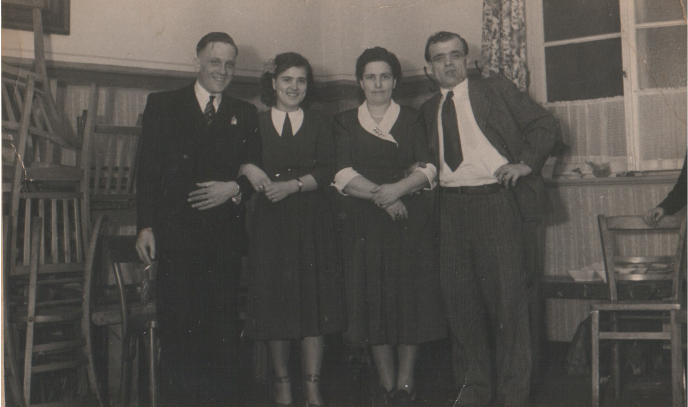
So began Mum's time as British army wife. Things were often quite tough, they had absolutely nothing. They could be billeted in odd places - a run down boarding house in Hull's fishing community was more than entertaining... After the war, Dad was posted all over the place, often Mum would arrive to join him months later - only to find he was immediately posted again - and she would be stuck for months before she could join him again. Nonetheless, she saw Egypt, Eritrea, and Cyprus, and Mum had pets for company. Eritrea was dangerous as she was close to ``bandit country" - and there she slept alongside a loaded gun. As you can see below, it wasn't all hellish. Both Mum and Dad especially loved Cyprus, and Mum ended up speaking a fair bit of Greek. Mum's mother, Christine died at the age of 50 during this time.
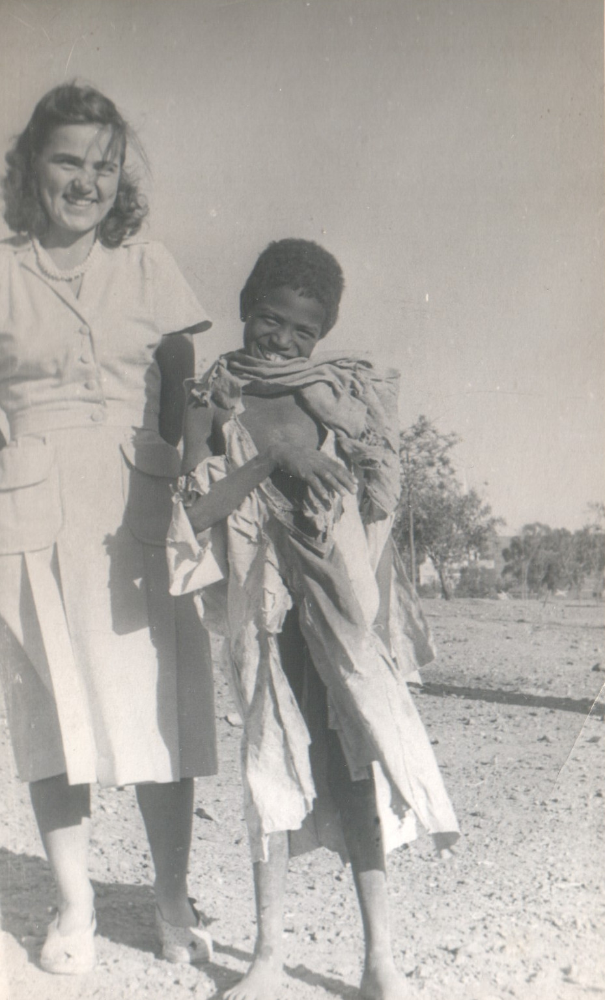 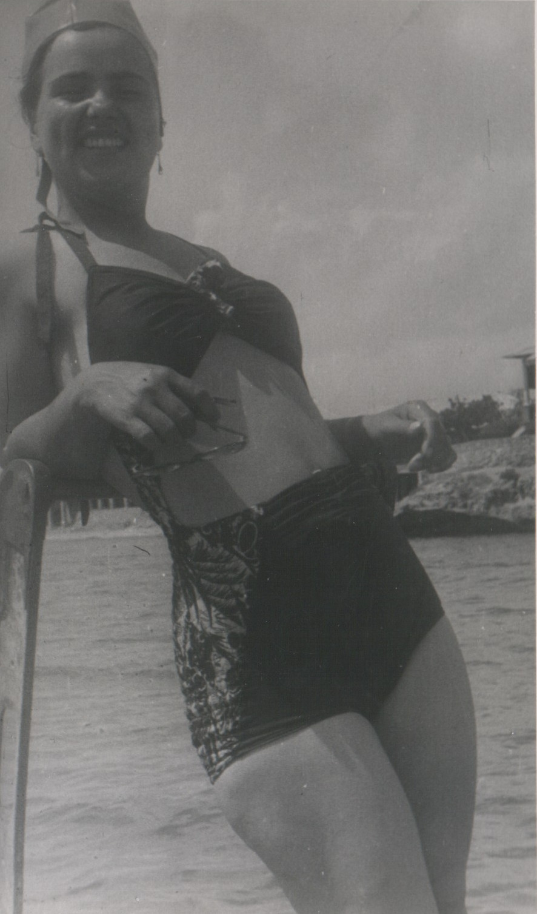 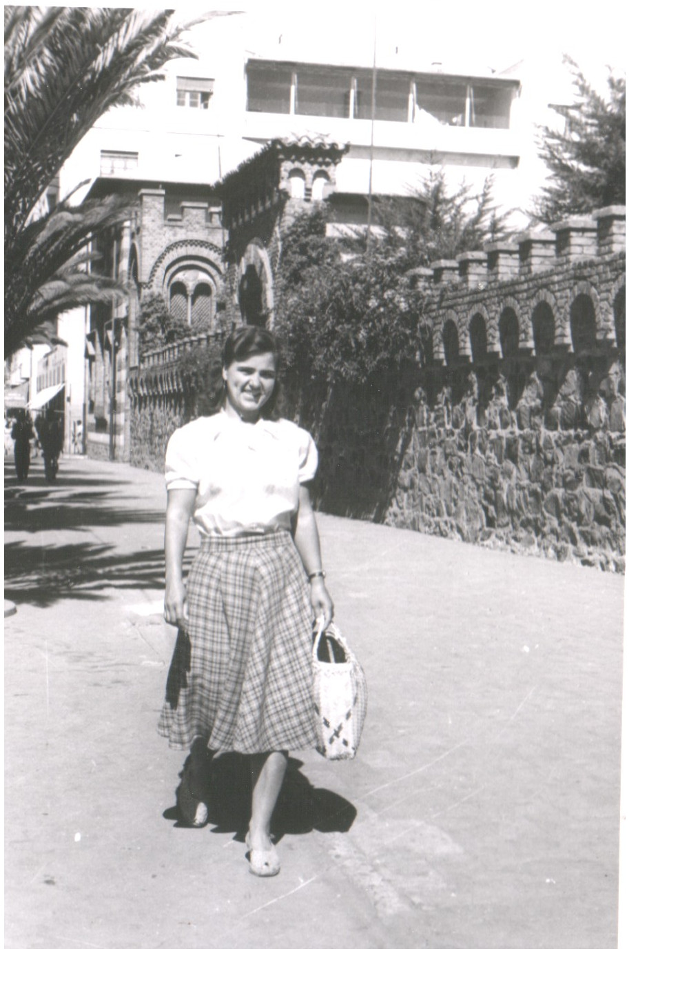
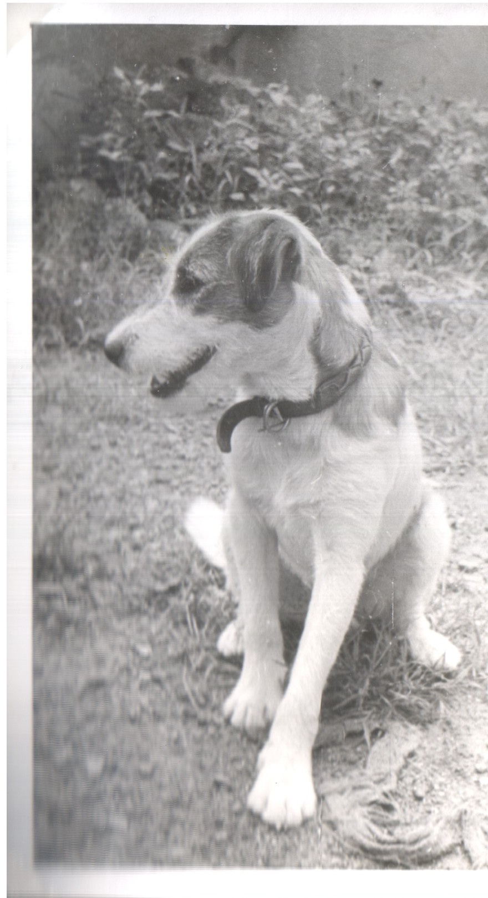 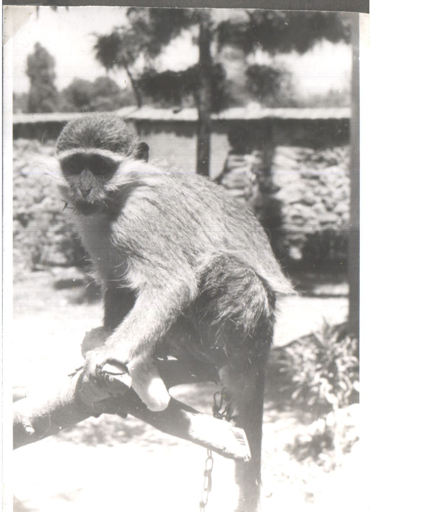 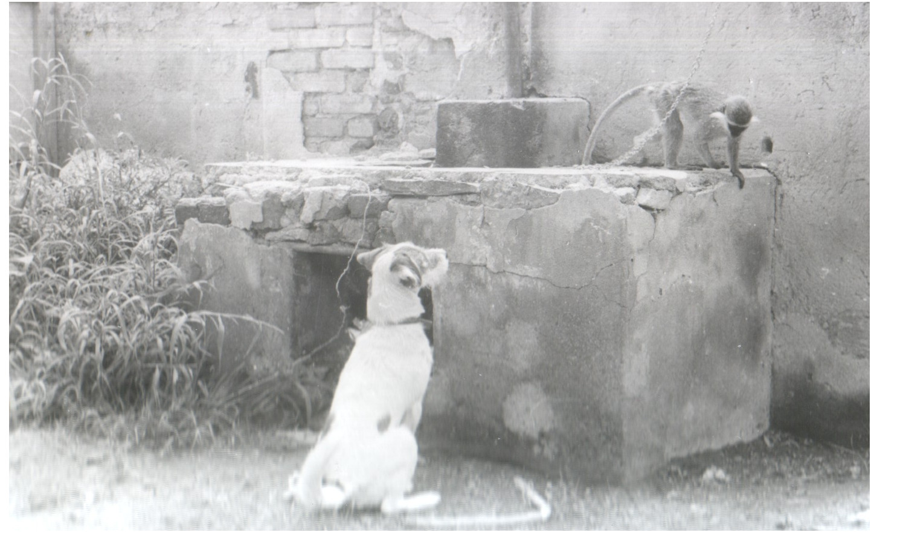
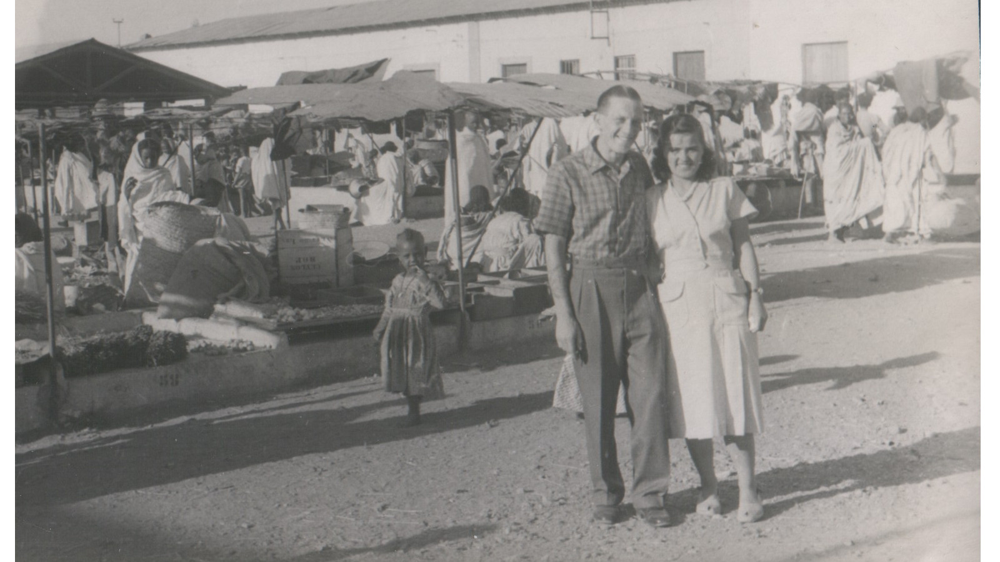
Eventually, after a run in with bandits in Eritrea, Dad decided getting shot at just wasn't his game anymore. He transferred to the Catering Corps, and trained as a chef. Mum had had run ins too, with peritonitis, and an infection that led to surgery. This meant they couldn't have children. They adopted me from an orphanage in Kingston Upon Hull. Eventually, they were settled for a long period at Arborfield Camp, where Dad was head chef in the Officers mess.
If you were not an officer, the army would start automatically demoting you and cutting your pay after you got to a certain age. A heavy hint that you had to leave. After twenty seven years, Dad left they army, and soon got a job as chef at Sutton's Seeds in Reading. However, civilian life started with a bump - Dad left so quickly we had nowhere to stay! So we moved into a tiny caravan on Longmore farm, paying rent to a farmer, who was a pretty nasty character.
Gradually, things improved. Dad changed jobs, and became a security guard at Gillette's. Mum tried her hand at being an Avon lady, got injured working for Huntley and Palmer's Biscuits, and then found herself working at Gillette's too. After a while she was on the team inspecting syringes and needles. During this time, we moved to an attic flat in Southampton street (Reading), and then into a maisonette apartment in Tilehurst (Reading). Eventually, there was enough saved for a deposit on a house, and we moved into a terraced house in Southcote (Reading) in 1969. Things were generally improving. Holiday's consisted of visits to the family in Germany. In the Christmas photo below, Tante Lora and her husband Waldemar are in the foreground. Tante Irmi and her husband Erwin are across the table, and Mum and dad are in the distance. I am with the three sisters in the other photo.
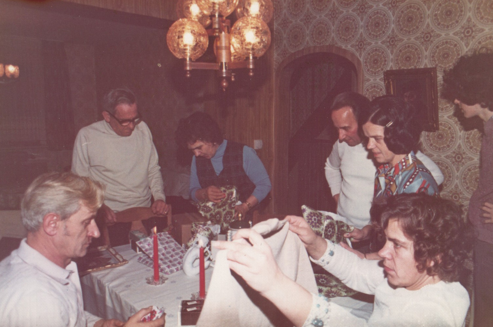 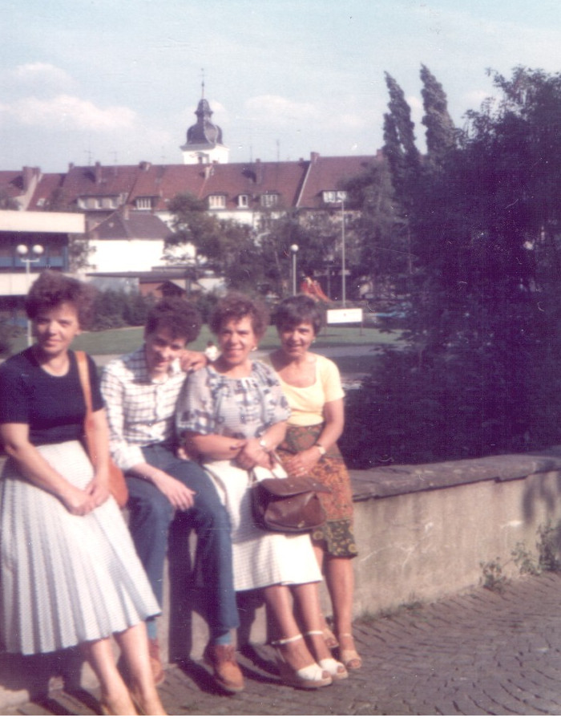
Dad had a stroke in 1971, was disabled, and was in no shape to work for years to come. Dad was duly declared fit for work (this was obviously absolute nonsense - but that's what the medical examiner declared anyway). Mum was now working part time as a messenger in the ministry of Agriculture and Fisheries, and we were not entitled to any social security benefits. All they could do was to watch their savings dwindle, and scrape by on a tiny income. Things seemed bad, but got far worse in 1977. Dad woke up with yellow skin one day, the doctor said he had cancer and had four weeks to live. Dad died four weeks to the day. Times had become grim.
My Mum and Dad had been in contact with the Tilehurst branch of the Royal British Legion , and both had met Vic (a founder member of the Tilehurst branch) there. Some time after dad died Mum agreed to translate on exchange visits between old soldiers from Germany (through the VDK ) and British Legion members. This was an annual event for a while. My Mother married Vic (a widower) in 1979. Apart from my Mum's resentment of the sheer amount of time spent on St John's and the Legion, they were happily married. They had a large circle of friends through both the Legion and British Rail, and had holidays with them, from Canada, to Yugoslavia, to Bulgaria, to Australia. You can see them shortly after they were married in the photo below.
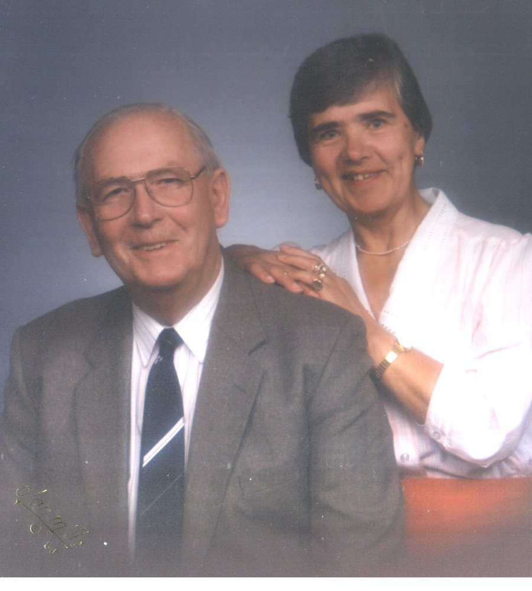
Mum and Vic enjoyed playing host on Sundays, Bob and Lynn (Vic's son and his wife) and their son Stevie were regular visitors. There were occasional visits from Germany too. Later, Mum welcomed my Wife Beatrice and doted on our daughter Philippa. However, time began to take its toll on Vic, who became increasingly infirm in the late 1990's. Mum fought like a tigress to keep him home, and Doctors and social workers were amazed at how long she managed. By the time it took two ambulance crews to shift him if he had slid off the sofa, she knew she could no longer cope. Mum visited the care homes every day, but after a couple of years in the care homes, pneumonia carried him off. This was in 2006.
During these and the following years, Mum was increasingly deaf. Quite often, I was too ill to cross town and visit, but she still saw Beatrice and Philippa whenever I couldn't make it. Bob was always a regular visitor at mum's place and helped out a lot. I set her up with a computer, and she was soon all over e-Bay, internet banking, and Facebook. Mum was still a good driver, but was slowing down a bit, and was suffering arthritic pains. Below is a Photo of Mum and Philippa at a party at Philippa's flat in the summer of 2012. (Philippa's partner Palli's family had come over from Iceland on a visit. Mum thoroughly enjoyed the occasion (especially the musical performance of a song entitled ``Chihuahua").
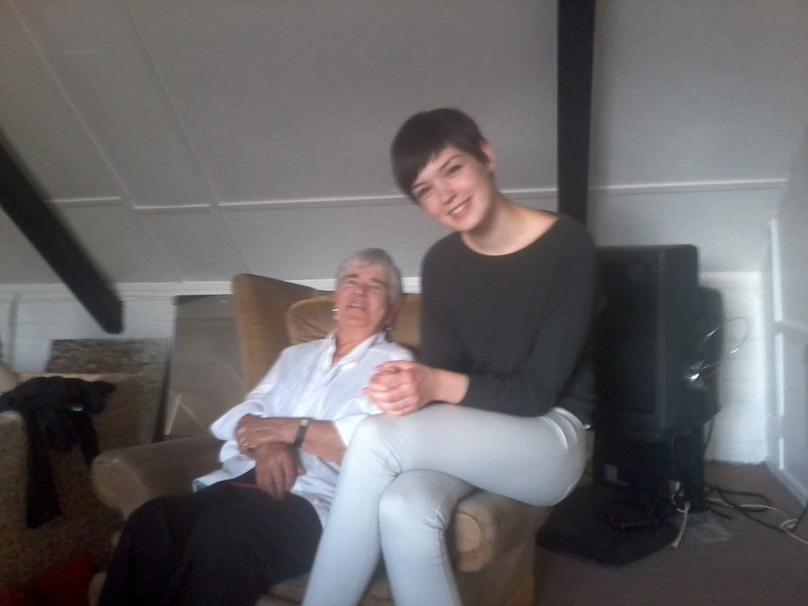
Christmas dinner was to be at our place that year, but Mum phoned up on Christmas eve saying she had the norovirus, and couldn't make it. We didn't think there was anything sinister, and neither did Mum. Bob visited her on Boxing day, and early the day after. (I couldn't risk leaving my house because of my own illness.) It was clear that Mum was much iller than we had thought, and Bob phoned the for the Doctor to come. Then as it became obvious how bad things were getting Bob phoned for an ambulance. Mum died in the ten minutes it took the ambulance to arrive. We all miss her. But she was generally happy and active until that short illness, and had a long and eventful life, and a lot of good times along with the bad.
I hope to expand and improve upon this at some point. This draft was uploaded December 2013.